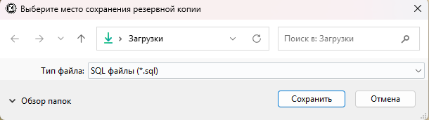
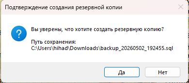
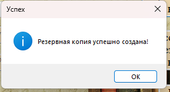
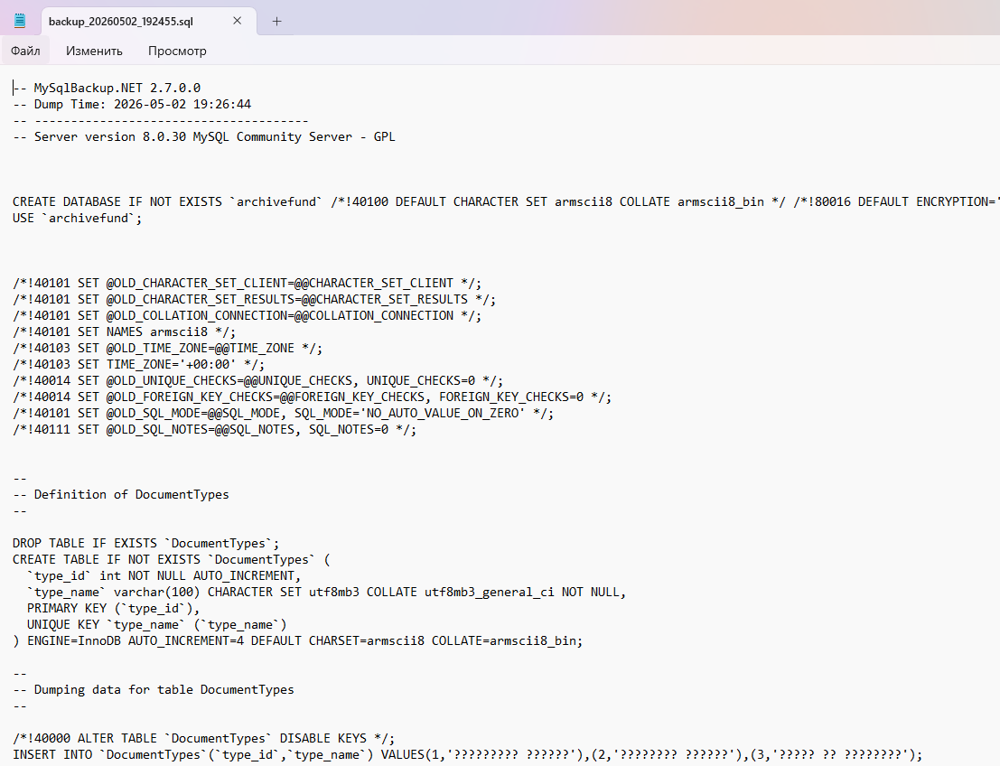

Функция «Создать резервную копию» позволяет сохранить всю базу данных в файл формата `.sql`. Этот файл можно использовать для восстановления данных в случае сбоя или для переноса базы на другой сервер.

Рис. 1. Кнопка «Создать резервную копию»
Порядок действий
1. Откройте форму управления пользователями (раздел «Пользователи» → кнопка «Добавить» или «Редактировать»).
2. Нажмите кнопку «Создать резервную копию».

Рис. 2. Диалог выбора места сохранения файла (.sql)
3. В появившемся диалоговом окне:
— Выберите папку для сохранения.
— Имя файла формируется автоматически по шаблону: `backup_ГГГГММДД_ЧЧММСС.sql` (например, «backup_20260124_143052.sql»).
— При необходимости можно изменить имя файла.
— Нажмите кнопку «Сохранить».

Рис. 3. Диалог подтверждения перед созданием копии
4. Подтвердите создание резервной копии, нажав «Да».
5. Дождитесь завершения процесса. При успешном завершении появится сообщение:

Рис. 4. Сообщение об успешном создании резервной копии
Что сохраняется в резервную копию
Резервная копия включает:
— Структуру всех таблиц (CREATE TABLE).
— Все данные из всех таблиц (INSERT INTO).
— Хранимые процедуры и функции (например, `GetBoxCountByType`, `HasActiveDocuments`, `ArchiveStudent`).
— Параметры кодировки и настройки базы данных.

Рис. 5. Пример содержимого созданного .sql файла
Рекомендации по регулярному резервному копированию
— Периодичность: рекомендуется создавать резервную копию ежедневно или еженедельно, в зависимости от интенсивности работы.
— Хранение: храните копии в надёжном месте (отдельная папка на сервере, внешний диск, облачное хранилище).
— Именование: автоматическое именование по дате и времени помогает отслеживать актуальность копий.
— Перед важными операциями: всегда создавайте резервную копию перед массовым удалением или редактированием данных.